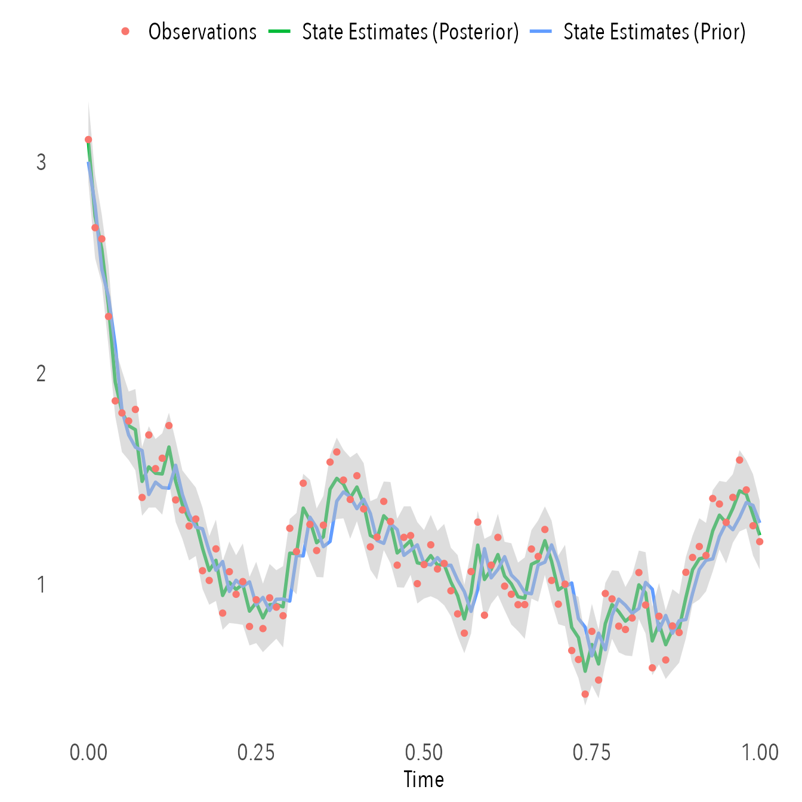
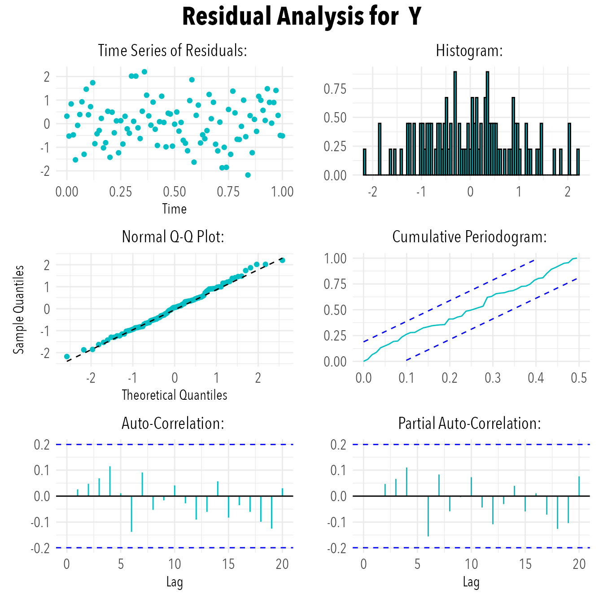

Let’s get starting using ctsmTMB!
We shall assume that you have some time series data, and
a stochastic differential equation model which you believe can be used
to model that data (or some latent variable that can be linked to your
data).
Here we consider the Ornstein-Uhlenbeck process \[ \mathrm{d}X_{t} = \theta (\mu - X_{t}) \, \mathrm{d}t \, + \sigma_{X} \, \mathrm{d}B_{t} \] where \(\theta\), \(\mu\) and \(\sigma_x\) are (fixed effects) parameters in the model to be estimated.
We assume that we have direct observations of the state \(X_{t}\) i.e. the observation equation is \[ Y_{t_{k}} = X_{t_{k}} + \varepsilon_{t_{k}} \qquad \varepsilon_{t_{k}} \sim N(0,\sigma_{Y}^{2} \cdot U_{t_{k}}) \] and the residuals are normally distributed with variance \(\sigma_{Y}^{2} \cdot U_{t}\), where \(\sigma_{Y}\) is a fixed effect (parameter) which should also be estimated, and \(U_{t}\) is an input. The input is added purely for the sake of this example. It could for instance be a vector \[ U_{t_{i}} = \left\{ 1,2,1,2,1,2,\cdots \right\} \] so that some observations have a larger variance than others, i.e. we believe them to be a less accurate measurement of \(Y\).
Initialising
We initialise a ctsmTMB model object using
We set the model name, which is used to generate the underlying C++ files
obj$setModelname("ornstein_uhlenbeck")By default the files are saved in a directory called ctsmTMB_cppfiles in the current working directory. The files can be stored in another location by specifying another directory as below:
obj$setCppfilesDirectory("some_path_to_a_directory")Now that the object is created let us first inspect it’s printout:
print(obj)## Stochastic State Space Model:
## Name ornstein_uhlenbeck
## States 0
## Diffusions 0
## Observations 0
## Inputs 0
## Parameters 0We see that the model is called sde_model (default), and
there are no states, diffusions, observations, inputs or parameters
currently registered. The name is used to name the C++ file
that will be created locally, and to later recognize the compiled model
object.
Add system equations
We can begin by adding the desired stochastic differential equation to the object.
obj$addSystem(dX ~ theta * (mu - X) * dt + sigma_x * dw)We note that the drift term ends with *dt and diffusions
are specified by dw or dw# where
# can be any sequence of numbers.
Add observation equations
We must also add the observation equation.
obj$addObs(Y ~ X)The observations associated with Y in the
data should also be named Y.
Add observation variances
For every observation variable we must also specify the variance of the normally distributed residuals for that observation equation
obj$setVariance(Y ~ sigma_y^2*U)The variable name on the left-hand side of the formula must match a
name previously defined via add_observations, and the
variance is associated with that observation equation.
Let’s inspect the model object again
print(obj)## Stochastic State Space Model:
## Name ornstein_uhlenbeck
## States 1
## Diffusions 1
## Observations 1
## Inputs 0
## Parameters 0
##
## System Equations:
##
## dX ~ theta * (mu - X) * dt + sigma_x * dw
##
## Observation Equations:
##
## Y: Y ~ X + e e ~ N(0, sigma_y^2 * U)So now we have specified one state \(X\) and an observation \(Y\). The diffusions count the number of
\(\mathrm{d}\omega_{i}\) terms. A
single equation can have multiple diffusion terms
i.e. sigma_1 * dw1 + sigma_2*dw2). We also note that there
are no inputs and no parameter specified yet.
Add inputs
We tell the model which variable names are inputs via
obj$addInput(U)The input values should be provided in the data, with
the same name, similar to the observations.
Add parameters
We must also specify the (fixed effects) parameters, together with their initial value and lower/upper bound, for the optimization.
obj$setParameter(
theta = c(initial = 5, lower = 0, upper = 20),
mu = c(initial = 0, lower = -10, upper = 10),
sigma_x = c(initial = 1e-1, lower = 1e-5, upper = 5),
sigma_y = c(initial = 1e-1, lower = 1e-5, upper = 5)
)We can fix a parameter value (so the parameter becomes a constant) by supplying just a single value. It is usually difficult to identify both of the noise parameters \(\left(\sigma_{X},\sigma_{Y}\right)\) in practice, so lets assume that we want to fix \(\sigma_{Y}\). This is done via
obj$setParameter(
sigma_y = 1e-1
)Let’s inspect the model object again, and see that inputs and parameters (both non-fixed and fixed) have been registered.
print(obj)## Stochastic State Space Model:
## Name ornstein_uhlenbeck
## States 1
## Diffusions 1
## Observations 1
## Inputs 1
## Parameters 4
##
## System Equations:
##
## dX ~ theta * (mu - X) * dt + sigma_x * dw
##
## Observation Equations:
##
## Y: Y ~ X + e e ~ N(0, sigma_y^2 * U)
##
##
## Fixed Parameters:
## sigma_ySet initial state and covariance
The last thing to do before we can perform estimation is to set the initial value of the state(s) and its associated (co)variance. These two inputs are adequate since we assume a normally distributed state. The choice of value should reflect ones belief in the initial state, but it is most often a ballpark figure.
Note that we use diag to construct a 1x1 matrix for the
covariance, as required by the method.
Fit model parameters to data
We are now ready to perform state filtration and parameter estimation. We first construct some fake data by simulating paths of the Ornstein-Uhlenbeck process using the Euler-Maruyama scheme.
# Choosing parameters
set.seed(10)
theta=10; mu=1; sigma_x=1; sigma_y=1e-1
# Creating simulation path
dt.sim = 1e-3
t.sim = seq(0,1,by=dt.sim)
dw = rnorm(length(t.sim)-1,sd=sqrt(dt.sim))
x = 3
for(i in 1:(length(t.sim)-1)) {
x[i+1] = x[i] + theta*(mu-x[i])*dt.sim + sigma_x*dw[i]
}
# Extract observations from simulation and add noise
dt.obs = 1e-2
t.obs = seq(0,1,by=dt.obs)
y = x[t.sim %in% t.obs] + sigma_y * rnorm(length(t.obs))
# Create data.frame
data = data.frame(
t = t.obs,
Y = y,
U = c(rep(c(1,2),times=round(length(y)/2)),1)
)The data must contain a time column named t and columns
for each of the specified inputs and observations.
We pass the data to the estimate method.
The method will build and compile a generated C++ function
for the negative log-likelihood, check if the supplied data contains all
necessary variables, construct the objective function (the computational
tree must be build for automatic differentiation) and then start the
optimization.
The output generated during the optimization is the objective
(negativ log-likelihood) value and parameter values at the current step.
The optimizer used in the package is stats::nlminb. This
optimizer is great because of its robustness and ability to use the
objective function hessian unlike e.g. ‘stats::optim’
fit = obj$estimate(data)## Building model...## Compiling model...## Note: Using Makevars in /Users/pbrve/.R/Makevars## using C++ compiler: 'Apple clang version 15.0.0 (clang-1500.3.9.4)'## using SDK: 'MacOSX14.4.sdk'## ...took 11.19 seconds## Checking data...## Constructing objective function and derivative tables...## ...took: 0.045 seconds.## Minimizing the negative log-likelihood...## 0: 823.96514: 5.00000 0.00000 0.100000
## 1: -23.631306: 4.97573 0.143302 1.08938
## 2: -27.304674: 4.92116 0.635388 1.01957
## 3: -28.159625: 5.39399 0.797586 1.00873
## 4: -28.595330: 7.35194 1.20550 1.00142
## 5: -30.261929: 7.00584 0.966687 1.02771
## 6: -31.541810: 8.06439 0.949977 1.05900
## 7: -34.410489: 12.1976 1.03521 1.15875
## 8: -34.983141: 14.7762 1.09189 1.22006
## 9: -35.073719: 15.9169 1.05173 1.25649
## 10: -35.106105: 15.9356 1.07264 1.25375
## 11: -35.106680: 15.9721 1.07247 1.25451
## 12: -35.109686: 16.1150 1.07195 1.25645
## 13: -35.114592: 16.2646 1.07149 1.25647
## 14: -35.126076: 16.4874 1.07103 1.25146
## 15: -35.141346: 16.6208 1.07113 1.23793
## 16: -35.153357: 16.5245 1.07182 1.21997
## 17: -35.156849: 16.3305 1.07228 1.21163
## 18: -35.157137: 16.2622 1.07243 1.21149
## 19: -35.157143: 16.2571 1.07244 1.21183
## 20: -35.157143: 16.2572 1.07244 1.21186
## 21: -35.157143: 16.2572 1.07244 1.21186## Optimization finished!:
## Elapsed time: 0.029 seconds.
## The objective value is: -3.515714e+01
## The maximum gradient component is: 2.9e-06
## The convergence message is: relative convergence (4)
## Iterations: 21
## Evaluations: Fun: 23 Grad: 22
## See stats::nlminb for available tolerance/control arguments.## Returning results...## Finished!Important Note for Model Changes
If you change the model at a later stage but retain the same model
name, then you need to recompile the C++ objective
function. You can do this like so:
obj$estimate(data, compile=TRUE)If you receive error messages when calling estimate
regarding variables that are not in your specified model, it is likely
because you forgot to recompile.
Parameter estimates
Let’s inspect results from the estimation.
We can print the fit object to see a standard
coefficient matrix for the parameter estimates.
print(fit)## Coefficent Matrix
## Estimate Std. Error t value Pr(>|t|)
## theta 16.257194 3.481811 4.6692 9.329e-06 ***
## mu 1.072440 0.079191 13.5425 < 2.2e-16 ***
## sigma_x 1.211858 0.158279 7.6565 1.178e-11 ***
## ---
## Signif. codes: 0 '***' 0.001 '**' 0.01 '*' 0.05 '.' 0.1 ' ' 1We can see the parameter estimate and the associated standard error together with the t-test statistic and P-value associated with the standard null-hypothesis \[ H_{0}: p = 0 \\ H_{1}: p \neq 0 \] Note that the true parameter values were set during the simulation step as \(\theta = 10\), \(\mu=1\) and \(\sigma_{X} = 1\).
The parameter values, standard deviations and covariance matrix can be extracted via:
The estimated (fixed) parameters:
fit$par.fixed## theta mu sigma_x
## 16.257194 1.072440 1.211858The standard deviations of the (fixed) parameters:
fit$sd.fixed## theta mu sigma_x
## 3.48181119 0.07919093 0.15827877The covariance of the (fixed) parameters:
fit$cov.fixed## theta mu sigma_x
## theta 12.12300915 0.078844171 0.176665520
## mu 0.07884417 0.006271203 0.001125772
## sigma_x 0.17666552 0.001125772 0.025052169State estimates
We can also plot prior and posterior state estimates The prior state estimate is the resulting estimate purely from integrating the mean and covariance of the SDE system forward in time, while the posterior state estimation is obtained from updating the prior estimate with the information contained in the observation (using Bayes’ rule).
# ggplot2 theme
mytheme =
theme_minimal() +
theme(
text = element_text("Avenir Next Condensed",size=15),
legend.text = element_text(size=15),
axis.text = element_text(size=15),
strip.text = element_text(face="bold",size=15),
panel.grid.major = element_blank(),
panel.grid.minor = element_blank(),
legend.box = "vertical",
legend.position = "top",
plot.title = element_text(hjust=0.5)
)
t = fit$states$mean$posterior$t
xprior = fit$states$mean$prior$X
xpost = fit$states$mean$posterior$X
xpost_sd = fit$states$sd$posterior$X
ggplot() +
geom_line(aes(x=t,y=xpost,color="State Estimates (Posterior)"),lwd=1) +
geom_line(aes(x=t,y=xprior,color="State Estimates (Prior)"),lwd=1) +
geom_ribbon(aes(x=t,ymin=xpost-2*xpost_sd,ymax=xpost+2*xpost_sd),fill="grey",alpha=0.5) +
geom_point(aes(x=data$t,data$Y,color="Observations")) +
guides(color=guide_legend(override.aes=list(shape=c(16,NA,NA),size=c(2,NA,NA),linetype=c(NA,1,1),lwd=c(NA,1,1)))) +
labs(x = "Time", y = "", color="") +
mytheme
Residual analysis
We can display a standard residual analysis for the observations by
calling plot on the fit object, which invokes
the S3 plot.ctsmTMB.fit method of
plot. This includes a quantile-quantile plot, histogram,
auto-correlations and cumulative periodogram.
plot(fit)
The residuals (both standard and normalized) can be extracted as well,
together with their standard deviation and covariance matrix via
fit$residuals
Extra: Adding algebraic equations
For the sake of clarity it can sometimes be easier to specify simple variables in the equations in place of some other (perhaps larger) expression. We can redefine a variable name by providing an algebraic relation.
Let’s say that we wish only to consider positive values of the
parameter \(\theta\), then it is
appropriate to estimate in the log-domain (since the domain of the
logarithm is the positive real axis). We use \(\theta = \exp\left(\log\theta\right)\) and
introduce the parameter logtheta to replace
theta. This is obviously just names, and you might as well
have written exp(theta) directly when specifying the system
equations, but calling the parameter logtheta reminds one
that we are really interested in the exponential of the parameter.
We specify the algebraic relation like so:
obj$setAlgebraics(theta ~ exp(logtheta))The parameter settings for theta are not automatically
transformed into logtheta, so they must be redefined: